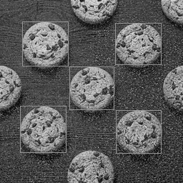
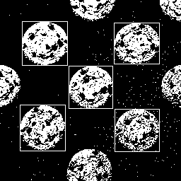

快速導覽
0. 完整流程
核心原則：先用 Python 產生 Golden Model，再把完全相同的 65,536 個灰階 pixel 餵給 Verilog RTL。最後逐 pixel 比較；Mismatch = 0 才算 PASS。
1. Part 2 全流程 PNG

2. 四張 BMP 測試圖片
Sample 1

原始檔：drawBbox_result_p1.bmp
Sample 2

原始檔：drawBbox_result_p2.bmp
Sample 3

原始檔：drawBbox_result_p3.bmp
Sample 4

原始檔：drawBbox_result_p4.bmp
3. 目前實際使用 Sample 2
Grayscale

Golden Binary

Threshold = 128：Gray ≥ 128 → 1 / 白；Gray < 128 → 0 / 黑。256×256 = 65,536 pixels。
4. 資料夾與路徑規則
Binarization_Part2_Real_Image_Verification/
├─ code/
│ ├─ design.sv
│ ├─ testbench_image.sv ← 本機版
│ ├─ testbench_image_edaplayground.sv← EDA Playground 版
│ ├─ prepare_image.py
│ ├─ rebuild_and_compare.py
│ ├─ run_local.ps1
│ └─ run_local.sh
├─ data/
│ ├─ gray.hex
│ └─ golden_binary.txt
├─ images/
│ ├─ drawBbox_result_p1~p4.bmp
│ └─ 產生的 PNG
├─ index.html
└─ Part2_Full_Flow.pngtestbench_image.sv 直接讀 ../data/gray.hex，不再需要把 gray.hex 複製到 code 資料夾。../data/ 資料夾，因此使用 testbench_image_edaplayground.sv，其中讀取的是 gray.hex。5. Windows PowerShell：完整執行順序
python prepare_image.py成功時會顯示 Prepared 65536 pixels，並在 ../data/ 產生 gray.hex 與 golden_binary.txt。
iverilog -g2012 -o simv design.sv testbench_image.svvvp simv成功時會顯示 Processed 65536 pixels. Done.，並在 code 資料夾產生 rtl_binary.txt。
python rebuild_and_compare.py理想結果：Mismatch = 0、Accuracy = 100.00%、PASS。
也可以一次執行全部步驟：.
un_local.ps1
5A. 完整「編輯 → 執行 → 驗證」流程
這一節把從解壓 ZIP、修改 Python / Verilog、產生資料、Compile、Simulation 到結果比對的整個操作順序串在一起。第一次操作建議完全照此順序，不要跳步。
cd "D:\...\Binarization_Part2_Real_Image_Verification\code"先用 dir 確認看到 design.sv、testbench_image.sv、prepare_image.py、rebuild_and_compare.py。
四張 BMP 都放在 ../images/。第一次可使用 Sample 2。若要換圖，只需修改 prepare_image.py 的輸入檔名。
INPUT_IMAGE = "../images/drawBbox_result_p2.bmp"例如改成 Sample 4：
INPUT_IMAGE = "../images/drawBbox_result_p4.bmp"本教材固定使用 256×256，因此：
WIDTH = 256
HEIGHT = 256
THRESHOLD = 128若更換其他尺寸圖片，除了 Python，Testbench 的 N 也必須同步修改成 WIDTH × HEIGHT。
python prepare_image.py成功後應看到：
Prepared 65536 pixels然後確認資料檔：
Get-ChildItem ..\data應包含 gray.hex 與 golden_binary.txt。
Get-Content ..\data\gray.hex -TotalCount 10會看到類似 34、80、9f 的 8-bit hexadecimal grayscale values。每行就是一個 pixel。
核心功能必須維持：
else if (pix_in >= threshold)
pix_out <= 1'b1;
else
pix_out <= 1'b0;這裡的 threshold 是由 Testbench 輸入；本例設定為 128。
本機版本一定要讀：
$readmemh("../data/gray.hex", img_mem);輸出則寫到目前的 code/：
fout = $fopen("rtl_binary.txt", "w");因此 Simulation 後應新增 code/rtl_binary.txt。
iverilog -g2012 -o simv design.sv testbench_image.sv若沒有任何錯誤訊息，代表 Compile 成功，並產生 simv。
vvp simv成功時：
Processed 65536 pixels. Done.接著確認：
Get-Item .\rtl_binary.txtpython rebuild_and_compare.py程式會讀取：
../data/golden_binary.txt
./rtl_binary.txt並重建 RTL 的二值化結果圖，再做 pixel-by-pixel 比較。
Total pixels : 65536
Matched pixels : 65536
Mismatch pixels : 0
Accuracy : 100.00%
Result : PASS只有 Mismatch pixels = 0 才代表 RTL 與 Python Golden Model 完全一致。
若你改了圖片、threshold、RTL 條件，完整重跑順序永遠是：
python prepare_image.py
iverilog -g2012 -o simv design.sv testbench_image.sv
vvp simv
python rebuild_and_compare.py或直接：
.\run_local.ps1prepare_image.py；改 RTL / Testbench → 至少重新 Compile + Simulation；任何修改後都應重新跑 Golden Compare。5B. EDA Playground 編輯流程（線上 Simulation）
若要在線上驗證同一個 RTL，使用專用的 testbench_image_edaplayground.sv。EDA Playground 不認得你 Windows 的 ../data/ 路徑，因此必須使用同層檔名 gray.hex。
貼入 design.sv 全部內容。
貼入 testbench_image_edaplayground.sv，其中必須是：
$readmemh("gray.hex", img_mem);利用 EDA Playground 的新增檔案功能建立/加入 gray.hex，內容直接來自本機 data/gray.hex。
Language: SystemVerilog/Verilog
Tools & Simulators: Icarus Verilog 12.0整張圖第一次不建議開 EPWave，避免 VCD 太大。
目標是讓 Testbench 讀完所有 grayscale pixels 並輸出 binary result。若平台可下載輸出檔，再把結果拿回本機執行 rebuild_and_compare.py。
6. 驗證分工
| 階段 | 檔案 | 目的 |
|---|---|---|
| Preprocess + Golden | prepare_image.py | BMP → Gray → gray.hex + golden_binary.txt |
| RTL | design.sv | clocked threshold comparator |
| Local Testbench | testbench_image.sv | $readmemh("../data/gray.hex")；送 65,536 pixels |
| EDA Playground Testbench | testbench_image_edaplayground.sv | $readmemh("gray.hex") |
| Compare | rebuild_and_compare.py | 重建 RTL Binary PNG + pixel-by-pixel compare |
7. Code Files
design.sv
`timescale 1ns/1ps
module binarization(
input wire clk, input wire rst_n, input wire [7:0] pix_in,
input wire [7:0] threshold, output reg pix_out
);
always @(posedge clk or negedge rst_n) begin
if(!rst_n) pix_out <= 1'b0;
else if(pix_in >= threshold) pix_out <= 1'b1;
else pix_out <= 1'b0;
end
endmoduletestbench_image.sv（Local PC）
`timescale 1ns/1ps
module tb_binarization_image;
localparam N = 65536;
reg clk, rst_n;
reg [7:0] pix_in, threshold;
wire pix_out;
reg [7:0] img_mem [0:N-1];
integer i, fout;
binarization dut(.clk(clk),.rst_n(rst_n),.pix_in(pix_in),.threshold(threshold),.pix_out(pix_out));
initial clk=0; always #5 clk=~clk;
initial begin
$readmemh("../data/gray.hex", img_mem);
fout=$fopen("rtl_binary.txt","w");
threshold=8'd128; rst_n=0; pix_in=0; #12 rst_n=1;
for(i=0;i<N;i=i+1) begin
@(negedge clk); pix_in=img_mem[i];
@(posedge clk); #1; $fwrite(fout,"%0d
",pix_out);
end
$fclose(fout);
$display("Processed %0d pixels. Done.",N);
#10 $finish;
end
endmoduleEDA Playground 版最重要差異
$readmemh("gray.hex", img_mem);其餘 RTL 與測試流程相同。
8. 最終 PASS 應該看到
Total pixels : 65536
Matched pixels : 65536
Mismatch pixels : 0
Accuracy : 100.00%
Result : PASS完成 Part 2 後，再進 Part 3：Technology Mapping → Gate-Level Netlist → Gate-Level Simulation，並用同一張圖片再次驗證。
9. 指令流程表：每一行在做什麼？
下面這組指令代表從「影像前處理」到「RTL Compile / Simulation」再到「Golden Model 比對」的完整執行流程。
cd code
python prepare_image.py
cp ../data/gray.hex .
iverilog -g2012 -o simv design.sv testbench_image.sv
vvp simv
python rebuild_and_compare.py| 順序 | 指令 | 在做什麼 | 主要輸入 | 主要輸出 |
|---|---|---|---|---|
| ① | cd code | 切換到專案的 code/ 資料夾，後續 Python、Verilog 編譯與模擬都從這裡執行。 | 專案資料夾 | 目前工作目錄變成 code/ |
| ② | python prepare_image.py | 執行影像前處理：讀取彩色 BMP、轉成 Grayscale，並產生 RTL 使用的灰階資料與 Python Golden Model。 | Color BMP | ../data/gray.hex../data/golden_binary.txt |
| ③ | cp ../data/gray.hex . | 把 data/gray.hex 複製一份到目前的 code/ 資料夾，供使用 $readmemh("gray.hex", ...) 的 Testbench 讀取。 | ../data/gray.hex | ./gray.hex |
| ④ | iverilog -g2012 -o simv design.sv testbench_image.sv | 使用 Icarus Verilog 編譯 RTL 與 Testbench。-g2012 啟用 Verilog/SystemVerilog 2012 語法；-o simv 指定模擬執行檔名稱。 | design.svtestbench_image.sv | simv |
| ⑤ | vvp simv | 真正執行 RTL Simulation。Testbench 逐一把 65,536 個 grayscale pixels 送入 design.sv，取得每個 pixel 的二值化輸出。 | simvgray.hex | rtl_binary.txt終端顯示 Processed 65536 pixels. Done. |
| ⑥ | python rebuild_and_compare.py | 把 RTL 的 0/1 輸出重建成二值化圖片，並與 Python Golden Model 逐 pixel 比較，最後輸出 Match / Mismatch / Accuracy / PASS。 | rtl_binary.txt../data/golden_binary.txt | RTL Binary Image Pixel-by-Pixel Compare PASS / FAIL |
testbench_image.sv 已經使用 $readmemh("../data/gray.hex", img_mem);，因此本機執行時其實可以省略第 ③ 行 cp ../data/gray.hex .。若改用 EDA Playground 版本 Testbench，才會使用同層的 gray.hex。